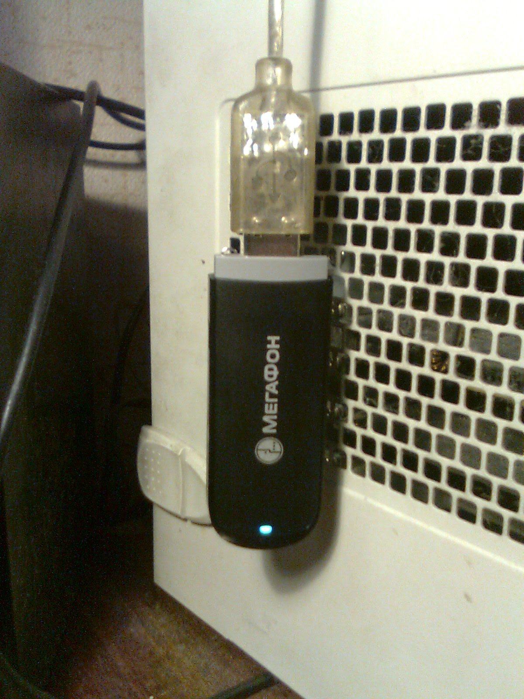
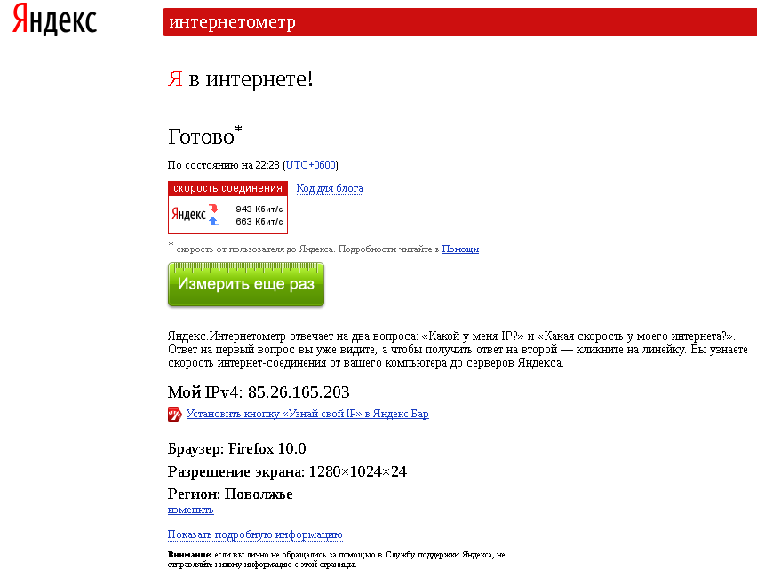

Технологии беспроводного доступа в интернет очень удобны своей мобильностью, однако они по-прежнему уступают проводным технологиям по скорости и надёжности. Дома удобнее и дешевле пользоваться услугами проводных провайдеров, однако проводные провайдеры обходят стороной частные дома и дома с малым количеством квартир. В таких случаях не остаётся ничего лучшего, чем воспользоваться технологиями беспроводного доступа. Мне повезло и я могу пользоваться услугами проводного провайдера. Однако, получилось так, что в мои руки попал 3G-модем от Мегафона, который я незамедлительно решил опробовать на своём домашнем компьютере под Debian.
Если окинуть взглядом просторы интернета, то практически на поверхности можно легко найти описание процедуры настройки 3G-модема E352 от Мегафона. Процедура проста до безобразия:
1. Ставим пакеты usb-modeswitch и ppp:
# apt-get install usb-modeswitch ppp
2. Создаём файл настройки для демона PPP в файле /etc/ppp/peers/megafon-3g:
connect "usr/sbin/chat -f /etc/chatscripts/megafon-3g" /dev/ttyUSB0 crtscts noauth usepeerdns defaultroute user "" password ""
3. Создаём скрипт /etc/chatscripts/megafon-3g для программы chatscript:
TIMEOUT 35 ECHO ON ABORT '\nBUSY\r' ABORT '\nERROR\r' ABORT '\nNO ANSWER\r' ABORT '\nNO CARRIER\r' ABORT '\nNO DIALTONE\r' ABORT '\nRINGING\r\n\r\nRINGING\r' ABORT '\nUsername/pASSWORD Incorrect\r' '' \rAT OK 'AT+CGDCONT=1,"IP","internet"' OK ATD*99***1#CONNECT ""
4. Пробуем установить подключение:
# pon megafon-3g
Если подключение установлено, светодиод на модеме перестанет мигать зелёным цветом и загорится голубым цветом, как на фотографии:
5. Если модем будет постоянно включен, а при каждой загрузке необходимо автоматически устанавливать подключение, в файл /etc/network/interfaces прописываем следующие строки:
auto megafon-3g iface megafon-3g inet ppp provider megafon-3g
Скорость, судя по интернет-пузомерке internet.yandex.ru для беспроводной сети, по моему мнению, очень даже приличная:
Входящая - 943 Кбит/с, исходящая - 663 Кбит/с.
Ещё одним приятным бонусом является наличие у этого модема разъёма для карт microSD - модем может выполнять функции флешки или адаптера для карт microSD.